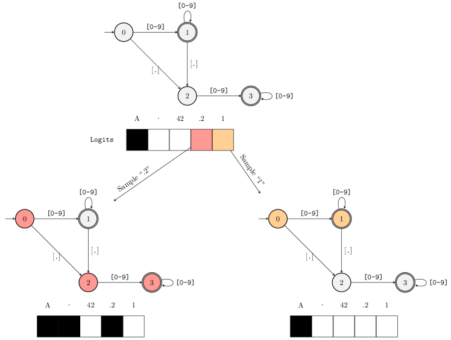

定义 SchemaJSON / Markdown / 函数签名
结构化输出与约束解码
让模型吐出来的不仅是「人话」，而是程序能稳定解析的结构——这是工具调用、API 集成和 Agent 的技术底座。很多人以为「结构化输出 = 在 prompt 里求模型输出 JSON」，然后上线被 JSON 解析报错打脸。真正的解法是在解码阶段物理拦截非法 token。这一节从「为什么」讲到「怎么做」，最后带你亲手跑通一个完整例子。
一图看懂
结构化输出的核心矛盾是：模型天生是「自由生成器」，程序天生要「严格语法」。两者之间的桥，不是提示词，而是解码时的语法约束——每一步生成，都只允许模型在「符合目标格式」的 token 里做选择。
- 编译为语法状态机 FSM
- 定义 Schema / JSON / Markdown / 函数签名
- 每步解码前计算合法 token 集合
- 编译为 / 语法状态机 FSM
- logits 置 -inf / 模型被强制选别的
当前 token是否合法？- 每步解码前 / 计算合法 token 集合
logits 置 -inf模型被强制选别的- 当前 token / 是否合法？否
- 正常采样
- 当前 token / 是否合法？是
- 输出 100% 符合 Schema
- 正常采样
怎么读这张图：从左往右看——你先把「想要什么格式」声明出来（Schema），编译成一个状态机；然后每一次模型要吐一个 token 之前，状态机告诉系统「现在这个位置，词表里哪些 token 合法」；合法的放行、非法的把概率清零；如此循环直到输出结束。注意最后一步的措辞：不是「大概率合法」，是「100% 符合」——因为非法路径在物理上就选不到。
⚠ 重要警告
约束解码保证格式合法，不保证内容安全。它不是安全边界。模型仍然可以在合法的 JSON 字段里塞入恶意内容、虚假信息或被注入的指令。格式校验和内容安全是两个完全不同的维度——内容侧的拦截属于 护栏 的范畴。这条警告值得在每一篇讲结构化输出的文章里出现：很多人以为上了 JSON Schema 就防住了注入，这是危险的误解。
为什么需要结构化输出：先看它解决什么
把「模型输出」直接当程序输入，会遇到三类典型事故，先建立直觉：
核心主题三类典型事故
01模型加料
- 输出前多一句"当然可以!"
- json.loads 直接报错
02语法残缺
- 缺右括号
- 解析到一半崩溃
03类型错误
- temp 给成"很热"
- 程序要 int 拿到字符串
这三类事故不是「换个更好的模型」能解决的——即使是最强的模型，在采样压力下也会偶尔吐一个多余的字。本质问题是模型的概率分布里，非法 token 的概率不是零。只要概率不是零，就总有踩雷的时候，而且频率随上下文长度和并发量放大。
一句话直觉
让模型输出 JSON 就像让一个自由诗人替你填政府表格——你当然可以在表格上写「请规范填写」，但更可靠的是把表格做成「只能勾选项」的物理结构。约束解码就是做后者：不靠请求，靠结构。
三个层次，从弱到强
让模型输出结构化内容，有三层方案，可靠度递增、成本也递增：
- ① 提示约束『请输出合法 JSON』② 厂商 API 选项response_format / tool_use③ 约束解码本地语法状态机
- 模型可能不遵守缺失括号 / 加额外文字
- ① 提示约束 / 『请输出合法 JSON』可靠度:低
厂商侧解码时做了约束但实现不透明,绑定厂商- ② 厂商 API 选项 / response_format / tool...可靠度:高
数学上保证符合语法跨模型统一适用- ③ 约束解码 / 本地语法状态机可靠度:最高
| 层次 | 做法 | 可靠性 | 适用场景 |
|---|---|---|---|
| ① 提示约束 | 在 prompt 里写「请输出合法的 JSON」 | 低 —— 模型可能不遵守、缺失括号、加入额外文字 | 原型、一次性脚本、人工阅读场景 |
| ② 厂商 API 选项 | OpenAI response_format、Anthropic tool_use | 高 —— 厂商侧在解码时做了约束，但实现不透明 | 生产应用，愿意绑定单一厂商 |
| ③ 约束解码 | 本地控制，用语法状态机在每一步拦截非法 token | 最高 —— 数学上保证输出符合语法，且对任何模型统一适用 | 自托管推理、需跨厂商一致行为 |
实践中的现实判断：如果只是给内部工具用、且能容忍偶发重试，提示约束 + 解析失败重试就够了；一旦输出要直接进业务系统（数据库、下单、合约），就必须上约束解码。中间态（厂商 API 选项）在单厂商场景是性价比之王，但你要接受黑盒。
约束解码原理：拆成三个环节
约束解码的核心是一个在 token 空间运行的语法状态机。把主图拆开看，它其实只有三个环节：
环节一：把 Schema 编译成状态机
拿到你的 JSON Schema / 正则 / 函数签名后，系统先把它编译成一个有限状态机（FSM）。状态机的每个「状态」对应输出序列中的一个语法位置。例如 JSON 对象开头，状态是「期待 { 」；进入对象后，状态是「期待键名或 } 」。
这个概念不是玄学，它就是编译原理里「正则表达式 → 自动机」那一套，几十年前就有了。下面这张论文原图出自 Outlines 库的作者 Willard 与 Louf 在 2023 年的论文，画的就是把正则表达式 ([0-9]*)?\.?[0-9]* 编译成状态机后，如何用它在每个解码步过滤词表 token。

新手读这张图抓住两个关键点。第一，状态机里的每个节点都是「当前位置的语法身份」——图里的圆形节点代表中间状态，双圈节点代表可接受（接收态）。生成从一个状态出发，每读入一个合法 token 就迁移到下一个状态；只有落在接收态上才算整个字符串合法。第二，Outlines 的高明之处不是 FSM 本身，而是它给词表建了一个索引：把词表里所有 token 按「从当前状态出发读入后会落在哪个状态」提前归类，于是每一步只需要查索引而不是遍历几万 token 逐一试——这就是「高效」二字所在。论文里的图是示意图，重在讲清 FSM 逐 token 过滤的思路；实际词表的规模是几万到几十万 token，但原理完全一致。
- 状态 S0期待 {
- 状态 S1期待键名
- 状态 S0 / 期待 {读到 {
- 状态 S4 / 期待 , 或 }读到 ,
状态 S2期待 :- 状态 S1 / 期待键名读到字符串键
状态 S3期待值- 状态 S2 / 期待 :读到 :
状态 S4期待 , 或 }- 状态 S3 / 期待值读到值
- 状态 S5完成
- 状态 S4 / 期待 , 或 }读到 }
配字讲解：图里画的是字符级逻辑，方便理解；实际实现是 token 级的——因为模型吐的是 token（如「北京」是一个 token 而不是两个字）。所以真正的状态机要做的是：对词表里每一个 token，判断「从当前状态出发，读完这个 token 会落在哪个状态、是否合法」。这比字符级复杂一个量级，也是为什么「简单正则」和「完整 JSON Schema」的约束实现难度差很多。
环节二：每步计算合法 token 掩码
在每一个解码步骤，系统遍历词表（几万到几十万 token），逐个检查「当前状态下这个 token 是否会导致语法非法」，生成一个布尔掩码。这是一个相对昂贵的操作，聪明实现会做缓存——相同状态 + 相同 token 前缀的掩码可以直接复用。
- 词表 token(约 10 万)
- 掩码计算当前状态 × 每个 token
- 词表 token / (约 10 万)
- 合法 token:保留 logits
- 掩码计算 / 当前状态 × 每个 token
非法 token:logits = -inf- 掩码计算 / 当前状态 × 每个 token
- softmax
- 合法 token:保留 logits
- 非法 token:logits = -inf
- 从合法集合中采样
- softmax
配字讲解：这一步是整个方案的灵魂。关键在于「非法」的定义随状态变化——同一个 token「北京」在「期待字符串值」时合法、在「期待数字」时不合法；同一个「:」在「期待冒号」时合法、在「期待键名」时不合法。掩码不是静态的，是状态相关的动态掩码。这也就解释了为什么「提示约束」永远做不到——提示是静态文本，无法表达「此刻什么位置需要什么 token」这种时序信息。
环节三：强制采样
把掩码应用后，剩下的就是一次普通的采样——但采样空间被压缩到了合法 token 集合。这一步没有任何魔法，它就是标准的 logits 处理：
新手最容易搞错
以为「约束解码 = 事后校验 / 重试」。很多人做的流程是：让模型自由生成 →
json.loads 失败 → 换一句 prompt 再试一次。那不是约束解码，那是「提示约束 + 碰运气重试」——非法 token 仍然可能出现在每一轮输出里。约束解码的核心区别在于：非法 token 在采样前就被物理拦掉了，根本不会出现在模型能选的集合里。判断一个方案是不是「真约束解码」，就看一件事：它有没有在读 logits 之后、采样之前，对 token 集合做了屏蔽。只校验不拦截，永远达不到 100% 保证。
展开:约束采样的一小段核心逻辑(伪代码级)
def constrained_sample(logits, fsm_state, vocab, token_to_tids):
# 1. 计算当前状态下每个 token 是否合法
mask = []
for tid, token in enumerate(vocab):
next_state = fsm_state.advance(token) # 状态机尝试推进
if next_state is not None: # 能推进 = 合法
mask.append(1.0)
fsm_state = fsm_state # 保留原始状态供下次用
else:
mask.append(0.0)
# 2. 把非法 token 的概率清零
logits = torch.where(torch.tensor(mask) > 0,
logits,
torch.full_like(logits, float("-inf")))
# 3. 正常采样(温度 / top-p 等都在这里生效)
probs = torch.softmax(logits, dim=-1)
tid = torch.multinomial(probs, 1).item()
return tid, fsm_state.advance(vocab[tid]) # 返回下一个状态真实框架（outlines、guidance、vLLM 的 guided decoding）在这个骨架之上做了三件事：一是用「正则 → FSM」的编译器支持更复杂的语法；二是用缓存避免每次全量扫词表；三是支持 JSON Schema、CFG、JSON 模式等多种约束语言。理解了这个骨架，看任何框架的文档都只是「实现细节」的差异。
三类约束的表达力：能保证什么、不能保证什么
「约束」不是一种东西，不同约束语言能表达的东西不同，能保证的东西也不同。这是选型前必须搞清的：
| 约束类型 | 能保证什么 | 不能保证什么 | 典型实现 |
|---|---|---|---|
| 正则表达式 | 格式完全符合正则规则（如 \d{4}-\d{2}-\d{2}） | 语义正确性（「2024-13-40」正则合法但语义错） | outlines、vLLM regex |
| JSON Schema | 输出是合法 JSON，字段类型和结构正确 | 字段值的语义、必填字段是否合理填充 | outlines JSON、llamafile |
| 上下文无关文法 CFG | 嵌套结构匹配（括号配对、编程语言语法） | 类型安全、变量定义与引用一致性 | outlines Lark、guidance |
核心主题约束表达力层级
01正则表达式
- 表达能力:弱
- 保证:格式符合规则
- 适合单字段格式约束
02JSON Schema
- 表达能力:中
- 保证:结构 + 类型
- 适合键值对对象
03上下文无关文法 CFG
- 表达能力:强
- 保证:嵌套与递归结构
- 适合代码 / 复杂语法
配字讲解：选择约束类型时记住一条经验法则——够用就好，别上最重的。只要输出是「平铺的键值对」，JSON Schema 足够；只有当输出包含递归结构（比如「生成的代码里嵌套函数、函数里嵌套循环」）才需要 CFG。正则适合「一个字段」的格式约束，比如强制日期、手机号、十六进制哈希。上错层级不是「更稳」，而是「更贵且更难调试」。
完整实例走查：从 Schema 到约束输出
把前面所有环节串起来，走一个真实例子。假设你做一个「天气查询 API」，要求模型返回：城市名（字符串）、温度（整数）、是否下雨（布尔）、建议（可选字符串）。对应的 JSON Schema 是：
{
"type": "object",
"properties": {
"city": { "type": "string" },
"temp_c": { "type": "integer" },
"raining": { "type": "boolean" },
"advice": { "type": "string" }
},
"required": ["city", "temp_c", "raining"]
}注意 advice 不在 required 里——它是可选字段。这个「可选」对状态机意味着：在「期待 } 」的位置，模型可以合法地选择结束对象，也可以选择继续输出 advice 字段。约束解码会自动处理这种分叉，不需要你在 prompt 里额外说明。
逐步生成过程
- {\city\:\北京\,\temp_c\:28}第 1-2 步
- 第 3-6 步
- 第 1-2 步
- 第 7-10 步
- 第 3-6 步
- 第 11+ 步
- 第 7-10 步
配字讲解：注意两个关键点。第一，在「期待值」的位置，模型在「北京」这个 token 和「上海」之间做选择——这是它真正「思考」的地方，其余位置（冒号、逗号、括号）是状态机硬性规定的，模型只是被采样过去。第二，最后一步——模型可以选择输出 } 结束，也可以选择继续加 advice 字段，因为它不在 required 里；状态机在「期待 , 或 } 」的状态下，两个方向都合法。这种「语法允许的灵活性」是约束解码的自然特性，不需要额外配置。
用代码跑一遍：outlines 风格最小实现
理论讲完，看一个真实可跑的示例。下面用 Python 伪代码（贴近 outlines 的 API）演示「约束解码」怎么用——注意 API 只多了 regex= 或 json_schema= 一个参数，其余跟普通生成一模一样：
展开:约束解码的完整可运行示例(需 GPU 环境)
# 以 outlines 为例(概念通用于 vLLM guided decoding 等)
import outlines
# 1. 加载模型(任意 HF 模型,outlines 会注入约束采样)
model = outlines.models.transformers("Qwen/Qwen2-7B-Instruct")
# 2a. 正则约束:强制输出日期格式
generator_regex = outlines.generate.regex(
model, r"\d{4}-\d{2}-\d{2}"
)
date = generator_regex("今天是什么日期?回答格式:YYYY-MM-DD")
print(date) # 输出必然是 4-2-2 位数字+连字符,绝不可能是"明天"
# 2b. JSON Schema 约束:强制输出合法 JSON 对象
import json
schema = {
"type": "object",
"properties": {
"city": {"type": "string"},
"temp_c": {"type": "integer"},
"raining": {"type": "boolean"},
},
"required": ["city", "temp_c", "raining"],
}
generator_json = outlines.generate.json(model, schema)
result = generator_json("北京现在的天气怎么样?")
data = json.loads(result) # 这一行永远不会抛异常
print(data) # {'city': '北京', 'temp_c': 28, 'raining': False}运行这段代码需要 GPU 环境并安装 outlines 与对应模型。即便你不跑，也值得记住两个结论：一是API 侵入极小——约束只是生成器的一层包装，模型本身没被改动；二是输出可以直接喂给 json.loads 而无需 try-except 兜底——这就是「数学上保证」带给工程的确定性。
代价与性能：约束解码不是免费的
约束解码用「确定性」换「灵活性」，代价集中在三处，做架构决策前必须心里有数：
展开：手算一个 token 级掩码——为什么「一个 token 可能跨多个状态」
前面说过「真正的实现是 token 级的」，这里用一个 3-token 的小例子算一遍，你就能明白为什么实现难度比「字符级正则」高一个量级。
假设当前状态是「期待一个 JSON 字符串值」（即期待 "..."），词表里有三个候选 token：北京、28、:。系统要逐个问：从当前状态出发，把这个 token 读进去，状态机能合法前进吗？
北京：读入「北」时，状态机处于字符串内部（已见过开引号）；再读「京」，仍在字符串内部；读完整个 token 后状态机停在「字符串内部，等待闭引号」。结论：合法，放行。
28：在「期待字符串」的状态下，读到数字 2 是语法不允许的——状态机没有从这个状态出发、用「2」做迁移的边。结论：非法，logits 置 -inf。
:：同上，冒号只允许在键名之后出现，当前状态下非法，拦截。
这里的关键是：合法性判断是按 token 内部逐字符推进状态机完成的，而模型在「期待字符串值」这一步看到的候选可能成百上千。如果每次都重新从头遍历整个词表，成本就上去了——这就是为什么 Outlines 论文用「词表索引」把「token → 会迁移到哪个状态」提前算好存起来，把每步代价从「遍历全词表」降到「查一次索引」。工程上成熟的实现（vLLM、guidance）还做掩码缓存：同一个状态 + 同一个前缀命中的掩码直接复用。
一句话总结这个算例：「token 级」意味着一个 token 内部可能触发多次状态迁移，所以掩码计算必须能处理「一个 token 读到一半状态机可能已经报错」的情况——这也是为什么约束解码实现里「提前终止」「前缀 token」这些细节如此重要。
展开：踩坑实录——Schema 编译期「很慢」到底慢在哪
有个团队在生产环境遇到「首个请求慢 8 秒」的怪事，查到最后是 Schema 编译没预热。他们的接口用了一个包含 11 个嵌套对象、8 处 anyOf 的复杂 Schema，每次请求都现场编译——第一个请求把整个 FSM 建出来要好几秒，之后因为有缓存才变快。
背后的机制是：anyOf 意味着「这个位置可以是 A 也可以是 B」，状态机要为每个分支都展开状态；两个 anyOf 嵌套，状态数就是分支的笛卡尔积。所以 Schema 的「编译慢」通常集中在两类构造上：一是 anyOf/oneOf 分支多，二是 pattern 正则复杂。前者让状态膨胀，后者让状态内转移的字符集合计算变贵。
工程对策有四个：启动时预热编译（最优先）；尽量用 type 数组表达可空，少用 anyOf；把复杂的 pattern 拆成简单的多级 format 或枚举；实在没法简化时，给「编译 + 缓存」单独做监控，别让编译耗时混在请求耗时里排查。
核心主题约束解码的三类代价
01质量代价
- 模型被迫走次优路径
- 自由发挥型任务副作用最大
02计算代价
- 每步扫描词表算掩码
- 需缓存与增量更新优化
03表达代价
- 过度约束压扁模型表达
- Schema 复杂导致编译慢
- 质量下降：约束解码让模型被迫走它本不想走的路径。如果模型在某一位置「最想」输出的 token 恰好不合法，它会被迫选一个次优 token，然后顺着这次优选择继续往下编。累积下来内容质量可能明显受影响——尤其是「自由发挥空间大」的任务（创意写作、开放式回答）上，约束的副作用最大。
- 计算开销：每步对全词表做合法性判断是有成本的。工程上的缓解：缓存「状态 → 合法 token 集合」；用「预计算前缀的 token 集合」加速；在 vLLM 等引擎里用基于栈的 FSM 增量更新而非每次全量重扫。实测中，设计良好的实现可以把额外延迟压到个位数百分比。
- Schema 过大导致编译慢：JSON Schema 里的
anyOf/pattern等会使 FSM 状态急剧膨胀。线上服务里，首次编译 50 个复杂 schema 可能需要数秒——所以要在启动时预热编译，而不是每个请求现场编译。
什么时候不该用约束解码
三种情况建议退回「提示约束 + 重试」：① 输出是给人看的（Markdown 报告、邮件草稿）——格式自由度比确定性重要；② 任务本身极度开放（头脑风暴）——约束会杀死创造力；③ 你有强大的重试与后校验管线——偶发失败成本低于约束带来的质量损失。
常见坑位：真实项目里反复踩的五个
| 坑 | 现象 | 解法 |
|---|---|---|
| 只在 prompt 里求 | 线上偶发 JSON 解析失败 | 上约束解码，或至少加解析失败自动重试 |
| Schema 太松 | 类型对但值乱（temp 填了 -999） | 加 minimum/maximum/enum 等值域约束 |
| Schema 太紧 | 模型被迫瞎填必填字段 | 把「可能没有」的字段设为可选，允许空值 |
| 忽略编译耗时 | 首个请求慢几秒 | 启动时预热编译所有 Schema |
| 把格式当安全 | 注入 payload 藏在合法 JSON 里 | 格式约束 ≠ 安全边界，另设内容护栏 |
最常见的组合拳坑
「Schema 太紧 + 模型被迫瞎填」是生产中危害最大的组合：模型为了满足必填约束，会编造一个看似合理的值（比如把「未知」填成「1999-01-01」）。约束解码保证「结构存在」，不保证「内容真实」——可空字段一定给 null 出口，未知值宁可让模型报「无法回答」也别逼它编。
JSON Schema 校验失败的常见坑
约束解码只能保证「模型输出符合 Schema 的语法」，但 Schema 本身写错、写松、写歧义，照样会在下游炸开——而且这次不再是解析失败，而是静默的错误数据：程序跑起来了，字段也解析出来了，就是值不对。这类问题比解析失败更隐蔽，因为没有任何异常抛出。
第一个高频坑是值域约束缺失。一个只写了 {"type": "integer"} 的温度字段，模型完全有权输出 temp_c: -999 或 temp_c: 99999。类型正确，但业务语义荒谬。解法是给数值字段补 minimum / maximum，给枚举场景补 enum，把「类型对」升级成「值也合理」。
第二个坑是把必填字段定得太多。模型被逼着给每个 required 字段填值，遇到确实没有的信息就只能编。前文讲过解法：区分「这个字段可能没有」和「这个字段必须存在」，前者一律设为可选或允许 null。
第三个坑是没有关闭 additionalProperties。JSON Schema 默认允许对象里出现未声明的字段。模型在压力下可能顺手加一个 Schema 之外的键，下游代码如果按「已知字段白名单」处理会直接忽略它，但如果按「未知字段即报错」的严格模式处理，就会抛异常。想收紧输出，显式写 "additionalProperties": false。
第四个坑是嵌套与 allOf/anyOf 的误用。复杂 Schema 里用 anyOf 表达「整数或字符串」时，状态机要处理分支合并，编译复杂度和出错率都上升。经验法则：优先用 type 数组（如 "type": ["string", "null"]）表达可空，比 anyOf 更简单可控；只有当字段确实要「要么是对象 A、要么是对象 B」时才用 anyOf。
写完 Schema 后建议先用官方校验器离线跑一遍：拿一批真实模型输出喂给 jsonschema 校验库，把「通过语法、被校验器拦下」的输出收集起来逐条看——这一步能把上述四类坑在提测前就暴露掉。JSON Schema 的完整语法与关键字语义以 json-schema.org 官方规范为准。
最后一道防线：后校验与自动重试
即使上了约束解码，生产系统也不该把「格式一定对」当成不设防的理由。真实链路里还有两类场景是约束解码管不到的：一类是内容侧校验（格式合法但值不合理，比如把价格写成负数）；另一类是约束解码未覆盖的路径（比如绕过解码器的第三方调用、prompt 被截断导致的残缺输出）。所以成熟的方案是「约束解码在前 + 后校验兜底 + 失败重试」三段式。
后校验做什么？首先用 jsonschema 严格校验一遍完整输出，而不是只 json.loads 保证「能解析」。校验通过后，再跑业务规则：必填字段非空、数值落在合法区间、引用字段能查到对应实体、不允许出现未知枚举值。这层校验的意义在于：把「解析错误」翻译成「业务错误」——前者你只能让用户重试，后者你能给用户一个具体原因。
重试怎么做？注意一个关键设计：重试时必须把上次失败的原因反馈给模型，而不是简单地把同样的 prompt 再发一遍。做法是把校验失败的具体信息（「字段 temp_c 的取值 -999 超出范围 0~60」）拼回下一次请求，让模型在第二次生成时避开同样的错误。不带反馈的重试，失败率几乎不变；带反馈的重试，通常两三次内就能收敛到合法输出。
def generate_structured(prompt, schema, max_retries=3):
for attempt in range(max_retries):
raw = model.generate(prompt) # 约束解码保证语法
try:
data = jsonschema.validate(
json.loads(raw), schema) # 严格后校验
return data
except jsonschema.ValidationError as e:
# 关键:把错误喂回给模型,让它改正
prompt = prompt + (
"\n上一次输出未通过校验,原因: "
+ e.message + "。请修正后重新输出。"
)
raise RuntimeError("重试 %d 次仍未通过校验" % max_retries)这段代码把三层防线都串起来了：约束解码处理「语法」、jsonschema 处理「结构」、带反馈的重试处理「意外」。还要强调一点：重试次数要有上限，并且把「最终仍失败」当作一个可观测的异常上报，而不是静默吞掉——连续重试失败往往意味着 Schema 与模型能力不匹配，那正是回去改 Schema（而不是继续重试）的信号。关于失败率监控与告警的完整做法，见 可观测性与全链路追踪。
最后提醒一个工程上容易忽略的点：后校验与重试只适合「无状态」的场景。如果生成结果已经写入了数据库、或已经被下游消费（比如发出去一封邮件），再重试就会产生副作用重复。正确做法是先校验、后落库；校验通过前，宁可让请求挂起也不要半途生效。这也是为什么很多团队把「解析 + 校验 + 落库」放在同一个事务里，而不是散落在不同的异步任务中——一旦拆开，重试、幂等、补偿全都变成新问题。
练习:动手巩固
- 观察实验：用任意 API 模型，prompt 里写「请只输出 JSON」，连续问 20 次「北京天气」，统计有多少次能直接
json.loads成功——你会得到对「提示约束可靠性」的第一手数字。 - 状态机推演：手动画出「只含两个必填字段的 JSON 对象」的 token 级状态机，标出每个状态下的合法 token 集合（提示：字符串、数字、冒号、逗号、右括号）。
- 选型判断：以下场景各选哪一层方案？a) 内部脚本解析模型总结；b) 电商下单接口的收货地址；c) 让模型生成 Python 代码片段。答案在「三个层次」与「三类约束」两节里。
要点速查
- 本质：不是「求模型输出 JSON」，而是在解码时物理拦截非法 token，数学上保证输出符合 Schema。
- 三个环节：Schema 编译成 FSM → 每步计算状态相关的合法 token 掩码 → 把非法 logits 置 -inf 后采样。
- 三个层次：prompt 约束（不可靠）→ 厂商 API 选项（可靠但不透明）→ 约束解码（最可靠且跨模型统一）。
- 三类约束：正则（格式）→ JSON Schema（结构+类型）→ CFG（递归嵌套）；够用就好，别上最重的。
- ⚠ 格式合法 ≠ 内容安全：约束解码只保证结构，不保证 JSON 里的内容没有恶意。内容侧拦截看 护栏。
- 代价：约束解码会限制模型的自然表达，可能降低内容质量；复杂 Schema 编译耗时——启动时预热。
参考文献与延伸阅读
- outlines 官方文档 — 正则 / JSON Schema / CFG 约束解码的开源实现，本文代码示例的参考 · dottxt-ai.github.io/outlines
- vLLM 文档「Structured Outputs」章节 — 生产级推理引擎中的约束解码实现与性能优化 · docs.vllm.ai/en/stable/features/structured_outputs
- JSON Schema 规范 — 约束语言的权威定义，字段约束（enum/minimum/required）细节以官方为准 · json-schema.org
- Efficient Guided Generation for Large Language Models（Willard & Louf, 2023, arXiv:2307.09702）— Outlines 的方法论文，本页论文原图的出处：FSM 掩码 + 词表索引的完整论述。
- Generating Structured Outputs from Language Models: Benchmark and Studies（Geng et al., 2025, arXiv:2501.10868）— 对 Guidance / Outlines / XGrammar / vLLM 等约束解码框架的系统评测，回答「约束解码到底快不快、覆盖多广、质量影响多大」。
权威延伸资料
围绕“结构化输出与约束解码”继续深入
本章把模型能力落到应用：Prompt 和 Context Engineering、RAG、重排、结构化输出，以及带评测的 Agentic RAG。
阅读提示：应用质量取决于信息是否被正确组织和验证；提示词只是接口的一部分，检索、约束、评测和失败处理同样重要。
- Retrieval-Augmented Generation for Knowledge-Intensive NLP Tasks ↗
RAG 的原始论文，明确区分参数化记忆与外部非参数化记忆。
- ReAct: Synergizing Reasoning and Acting in Language Models ↗
交错推理与行动的 Agent 范式，也是工具调用和 Agentic RAG 的共同基础。
- Structured Outputs Introduction ↗
展示如何用 JSON Schema 约束生成并验证结构化结果，适合与本页的约束解码对照。
- Prompting Guide ↗
从任务模板、少样本示例到生成参数，提供可迁移的提示设计基础。
- Retrieval-Augmented Generation for Large Language Models: A Survey ↗
按检索、增强、生成和评测梳理 RAG 变体，适合作为进阶地图。
资料优先选用原始论文、官方文档、大学课程和公共机构材料；链接按 2026-08-10 检索，具体版本以来源页面为准。
主题级技术深化
围绕“结构化输出与约束解码”继续深入
发展脉络
结构化输出从提示 JSON、后处理修复发展到 function calling、JSON Schema 和约束解码，可靠性逐渐前移到生成过程。
机制抓手
schema 同时约束类型、枚举、必填和嵌套；服务端仍需做语义校验、版本迁移与错误分类，语法合法不代表业务正确。
工程权衡
约束越强重试越少，但复杂 schema 会提高解码开销并限制表达；宽松兼容又会把错误推给下游。
前沿观察
grammar-guided decoding、类型化 Agent 工具和可验证中间表示正在融合，跨供应商 schema 子集仍不一致。
实践检查为版本化订单对象设计 schema，注入缺字段、非法枚举和语义冲突，验证错误码与迁移路径。